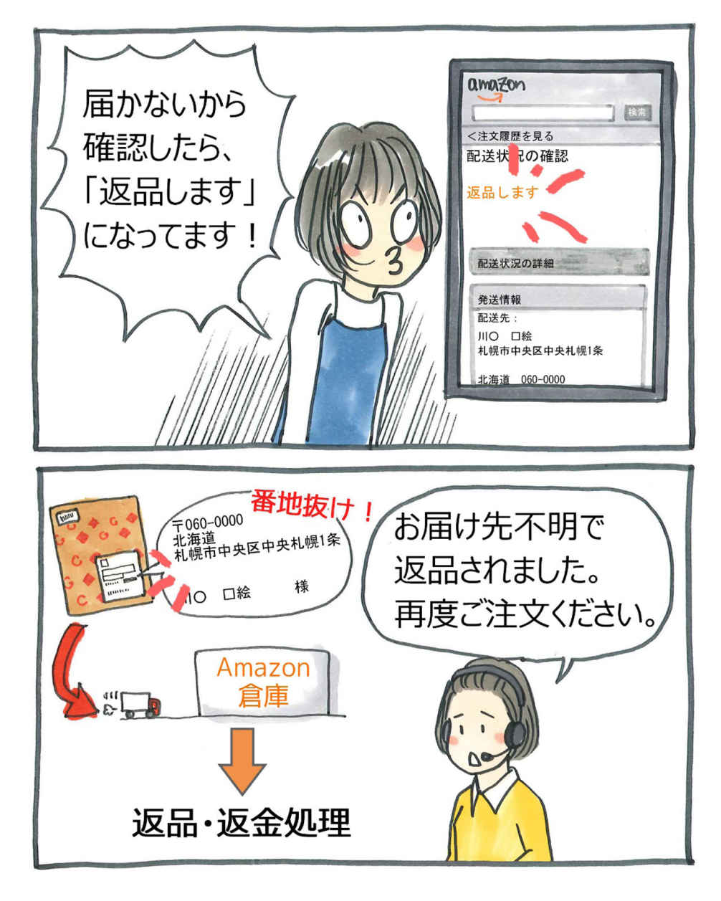
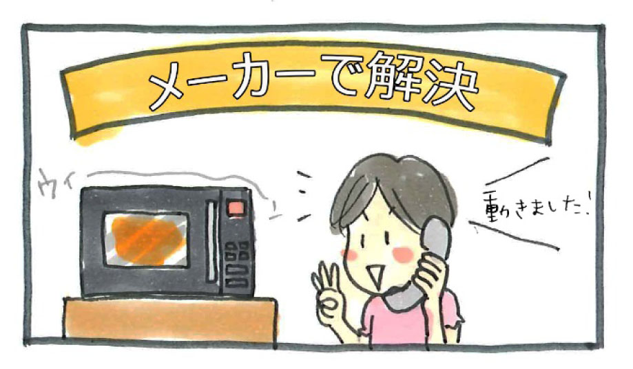
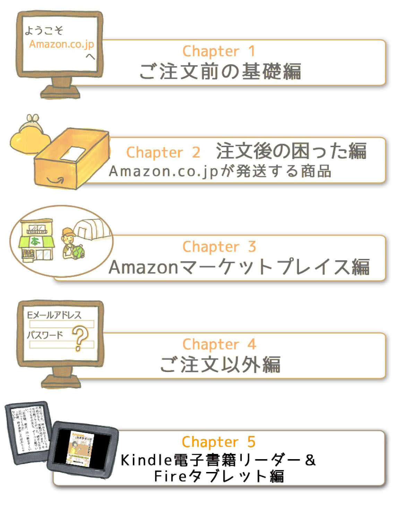

| Amazonショッピングを知る50のヒント 2015年版 ～お客様の本当の声セレクション～ | |
| Amazon.co.jp | |
| アマゾンジャパン株式会社 (2015) | |
はじめに
「Amazonショッピングを楽しむ50 のヒント 2014年版 ～お客様の本当の声セレクション～」は、Amazon.co.jpカスタマーサービスに実際にあったお客様の声を、代表的な50 の事例としてマンガ化したものです。
カスタマーサービス部では、2012年11 月よりお客様の声をマンガ化して社内報という形式で全社にお届けしております。お客様の生の声をもとに、Amazonでのお買い物を悩まずに、より楽しんでもらえるよう、各関連部署と連携しより良いサービスのご提供を進めてきました。
本書では、Amazonショッピングの使い方、サポート内容などをマンガに加え解説を交え分かりやすく描写しております。当サイトの使い方やお困り時のサポートになるだけではなく、様々なお問い合せ内容を知って頂き、一層Amazon.co.jpやカスタマーサービスを身近に感じてもらい、当サイトをさらに快適に利用頂けば幸いです。
今後も、Amazonカスタマーサービスは、「地球上で最もお客様を大切にする企業」をめざし、お客様の声を実現してまいります。
2014年11 月吉日
Amazon.co.jp カスタマーサービス部
改訂版に寄せて
『Amazonショッピングを知る50 のヒント 2014年版 ~お客様の本当の声セレクション~』の発行から半年以上が経過いたしました。その間にもAmazon.co.jpでは新しいサービスの開始や既存のサービス拡大が行われましたため、本書の内容を見直し、2015年7 月15 日時点の情報をもとに改訂版を発行することにいたしました。
改訂版では情報を更新するとともに、AmazonビデオやAmazonコインといったデジタルコンテンツのマンガを新たに追加しています。また、タイトルも『Amazonショッピングを知る50 のヒント 2015年版 ~お客様の本当の声セレクション~』と改め、新しい情報をお客様にお届けいたします。
この本が、当サイトをより快適にご利用いただくための一助となりましたら幸いです。
2015年7 月吉日
Amazon.co.jp カスタマーサービス部
Amazonショッピングを知る50 のヒント 2015年版
～お客様の本当の声セレクション～
・Amazon.co.jpでお買い物をする前に
1
．
注文はサイトからのみ承っております
/2
．
Eメールやサイト上のメッセージセンターなどで連絡します
/3
．
Amazon.co.jpの注文は、パソコン以外からでも可能です
/ コラム①
親孝行にもAmazonをご利用いただいています
・注文を確定するまでに困ったら
4 ． ショッピングカートから削除する方法がわかりません /5 ． 商品の情報を知りたいです /6 ． Amazonギフト券番号まで削りました...
・注文内容を確認・変更したくなったら
7
．
注文できてますか？
/8
．
キャンセルできません...
/9
．
住所を間違えました！
/10
．
注文していないのに、毎月、商品が届きます
・お支払いや領収書で心配になったら
11
．
クレジットカードの認証が得られないみたいですが...
/12
．
お支払い番号が来ません
/13
．
領収書を発行してください
・発送やお届けが遅いと感じたら
14
．
1
日経っても「出荷準備中」から変わりません
/15
．
出荷準備はいつ始まりますか？
/16
．
今、商品はどこにありますか？
/17
．
明日20
時以降に届けてください
/18
．
お急ぎ便が届きません...
/19
．
配達完了ってどういうことですか！？
/20
．
「返品します」って何ですか？
/21
．
大型台風ですけど、配達はどうなりますか？
・店頭受取を使うときには
22
．
コンビニに来たのに商品を受け取れません！
/23
．
認証キーのメールを消しちゃいました...
・商品に問題があったら
24
．
ケースが壊れているので商品を取り替えてください！
/25
．
商品が動きません！
/26
．
交換してほしいです
/27
．
届いていない商品があります
・返品することになったら
28 ． 返品はどうすればいいですか？ /29 ． 返送料はどっちが払うの？ /30 ． 返品処理はまだですか？ /31 ． 返金されましたか？ /32 ． 銀行への入金がありません /33 ． 全額返金されていません！ / コラム② 時々ファッションアドバイザー
・Amazonマーケットプレイスでの注文で困ったら
Amazonマーケットプレイスについて /34 ． コンビニか代引きで支払いたいのですが... /35 ． どうやっても配送料がかかります /36 ． 待っても注文が届きません /37 ． 出品者さんから返事がありません... /38 ． 届かないし音信不通です...
・Eメールアドレスやパスワードを変更するときには
39
．
パスワードを忘れました！
/40
．
機種変更でEメールアドレスが変わりました
・Amazonプライムがわからないときには
41
．
3900円の請求は何ですか？
・心当たりのない請求や荷物で心配になったら
42
．
不明な請求があります...
/43
．
心当たりのない商品が届きました...
・注文中に画面が進まなくなったら
44
．
注文が進みません...
・梱包にご意見があるときには
45
．
梱包のご意見をお寄せください
/ コラム③
こんな梱包のご意見をいただきました
・お客様の声でカイゼンしました
46 ． メール便のサイズを小さくしました！
・Kindle/Fireを使って困ったときには
47 ． コンテンツをキャンセルしたいです /48 ． どうやって再起動するの？ /49 ． Fireタブレットで受信するメールアドレスを変えたい /50 ． Wi-Fiにつながりません / コラム④． Kindle＆Fireの楽しみ方アレコレ
1 ． 高画質で映画を楽しみたい /2 ． Amazonコインで何が買えますか？ /3 ． もらったクーポンを使いたい /4 ． デジタル商品の領収書が必要です
この本の使い方と注意点
【使い方】
この本は、お客様からよく寄せられるお問い合わせのマンガと「カスタマーサービスからのご案内」で構成されています。お読みいただくと、Amazon.co.jpをより快適に楽しく使えるようになります。
①Amazon.co.jpでよく使われる用語は「 *用語集 」をクリックすると、文末の用語集へ移動します。
②お問い合わせに関連する情報を知りたい場合は、「こちら」をクリックするとヘルプページへとびます。
※iPhone、iPod Touch、iPadなどの端末でダウンロードしたKindle for iPad/iPhoneのアプリから、このリンクはご利用いただけません。
「この操作は現在サポートされていません」というメッセージが表示される旨、ご了承ください。
【注意点】
・本Kindle本には2015年7 月15 日時点のヘルプページの内容およびカスタマーサービスの対応を反映しておりますが、サイトのポリシーは随時変更する可能性があります。
・サイト上の規約・ヘルプページの内容と齟齬がある場合には、サイト上のポリシー・規約が最新であり、これらが優先します。
・本Kindle本には「サイト利用規約」の条件が適用され、「現状有姿」で提供されます。
・実際のカスタマーサービスへのお問い合わせ内容によっては、本Kindle本記載の内容と異なる対応がなされる可能性がありますのでご了承ください。
1 ．注文前の基礎編
1 ．注文はサイトからのみ承っております

Amazon.co.jpは、お客様ご自身でご注文を確定いただいております。カスタマーサービスではご注文を承ることはできません。
ご注文方法に不明な点がありましたら、ヘルプページをご確認いただくか、カスタマーサービスまでご連絡ください。エラーが出る場合は、どのような端末を使用されているのか、携帯やスマートフォンは機種名も教えてください。一部の携帯電話はAmazon.co.jpのサイトに対応しておりません。
ご注文方法以外でもお困りの場合は、 ヘルプページ をご参照ください。また、ヘルプページ内「カスタマーサービスに連絡」のリンクより、電話・チャット・Eメールでお問い合わせいただけます。
2 ．Eメールやサイト上のメッセージセンターなどで連絡します

Amazon.co.jpからの連絡は、電子的通知（Eメールやサイト上のメッセージセンターなど）で行います。アカウント登録の際は、有効なＥメールアドレスまたは携帯番号を登録してください。Eメールアドレスを登録された場合、注文や発送確認のＥメールはもちろん、お支払い番号や店頭受取用の認証キーのご連絡もＥメールでお送りします。Amazon.co.jpからのEメールが届かない場合は、自動的に迷惑メールなどに振り分けられている可能性があります。
下記ドメイン *用語集 からのEメールを受信できるよう設定をご確認ください。
・amazon.co.jp
・amazon.jp
・amazon.com
・marketplace.amazon.co.jp
・m.marketplace.amazon.co.jp
・gc.email.amazon.co.jp
・gc.amazon.co.jp
・payments.amazon.co.jp
ドメインについて詳しくは、 こちら をクリックしてご覧ください。
2015年6 月より、Amazonアプリ *用語集 から携帯番号を使ってアカウント *用語集 を作成できるようになりました。この場合、注文確認、発送、お支払い番号、認証キーなどのAmazon.co.jpからのお知らせは、アカウントサービス *用語集 の「メッセージセンター」に送信されます。
なお、メッセージセンターへのお知らせは、すべてのお客様がご覧いただけます。Eメールアドレスを使ってアカウントを作成したお客様でEメールが届かない場合は、一度メッセージセンターをご覧ください。
メッセージセンターは、PCサイト、スマートフォンサイト、Amazonアプリのアカウントサービスよりアクセスできます。
コラム① 親孝行にもAmazonをご利用いただいています
Amazon.co.jpでの注文商品は、自宅以外のお届け先にも届けられます。本人以外を受取人として注文することもできるため、インターネットに不慣れな家族のために注文されるお客様もたくさんいらっしゃいます。
この本でAmazon.co.jpに詳しくなって、ぜひAmazon.co.jpをご活用ください。それでもわからないことがあれば、カスタマーサービスへご連絡ください。喜んでお手伝いいたします。
4 ．ショッピングカートから削除する方法がわかりません
ショッピングカート *用語集 に入れた商品はご注文前ですので、いつでも削除が可能です。
なお、ショッピングカート内の商品は、注文前のため、価格や在庫状況は確定しておりません。常に最新の価格、在庫状況、商品情報へと変更されます。最初にショッピングカートに入れた際の価格などとは異なる場合がありますので、ご注意ください。
5 ．商品の情報を知りたいです
商品を購入する際に必要と思われる情報は、商品詳細ページ内に記載しています。まずは商品詳細ページを確認してください。お客様が必要な情報が掲載されていない場合は、お手数ですがメーカーサイトをご確認ください。それでも情報が見つからない場合は、カスタマーサービスまでご連絡ください。できるかぎりのお手伝いをいたします。
2 ．注文後の困った編
(Amazon.co.jpが発送する商品)
8 ．キャンセルできません...
キャンセル可能かどうかは、注文状況により異なります。注文履歴で注文状況を確認してください。
未発送.........キャンセル可能です。
出荷準備中...キャンセルリクエストは可能です。キャンセルできるかどうかはリクエスト後にEメールまたはメッセージセンターでお知らせします。キャンセルリクエストに失敗した場合は、商品受領後、返品・返金依頼をしてください。
発送済.........キャンセルできません。商品受領後、返品・返金依頼をしてください。
ご注文のキャンセルについて詳しくは、 こちら をクリックしてご覧ください。
デジタル商品のキャンセルについては、 こちら のマンガをご覧ください。
9 ．住所を間違えました！
注文履歴で「出荷準備中」と表示されると、発送前でも注文を変更することはできません。
お届け先を間違った場合は、発送後に配送業者にご相談ください。住所変更に伴う手数料は加算されません。
ただし、一部配送業者の場合、お届け先の変更ができるのは、Amazon.co.jpもしくは、不在票を受け取った本人のみとなります。
不在票に記載の配送業者にご連絡いただくか、カスタマーサービスにご連絡ください。
注文内容の変更について詳しくは、 こちら をクリックしてご覧ください。
また、以下の場合も、出荷準備が開始されると変更できません。
10 ．注文していないのに、毎月、商品が届きます
「Amazon定期おトク便」は、定期的に購入される商品を割引価格で自動的にお届けするサービスです。対象商品をショッピングカート *用語集 に入れるときに、同時にAmazon定期おトク便に申し込みます。
次回以降は、申し込み時に設定した期間に基づいて、自動的に注文商品を割引価格でお届けします。主な対象商品は、食品、洗剤、おむつ、ペットフードなどの消耗品です。 定期おトク便ストア もありますので、ぜひご覧ください。
※すでに出荷準備が始まっている場合など、キャンセルが間に合わないことがあります。
Amazon定期おトク便について詳しくは、 こちら をクリックしてご覧ください。
11 ．クレジットカードの認証が得られないみたいですが...

クレジットカードが認証 *用語集 されない場合には、Eメールまたはメッセージセンターでお知らせします。PCサイトのアカウントサービス *用語集 で再承認手続きを行ってください。PCサイト以外では手続きできません。PCサイトにアクセスできないお客様は、カスタマーサービスまでご連絡ください。
なお、アカウントサービスの注文履歴で「出荷準備中」と表示されていれば、お知らせはいたしませんが確実に認証されています。「未発送」と表示されている場合は、まだ承認手続きは行われておりません。認証されない場合のみ、再度Eメールまたはメッセージセンターでお知らせします。
13 ．領収書を発行してください
商品お届け時にAmazon.co.jpが発行する領収書は添付しておりません。領収書は支払方法により入手方法が異なります。
また、Amazon.co.jpでは、一部の商品については納品書を同梱せずにお届けしています。納品書が必要な場合は、「アカウントサービス」内にある注文履歴画面から「領収書/購入証明書」を印刷してご利用ください。メーカーで保証や修理を受ける際などのお買い上げ証明としてもご利用いただけます。
14 ．1 日経っても「出荷準備中」から変わりません
出荷準備とは、配送センター内での出荷までの一連の作業を指しています。配送センター内で商品を探し、梱包し、出荷用のラベルを貼って、配送業者に手渡すまでの作業が、出荷準備です。そのときどきの出荷量によって、出荷準備にかかる時間は異なりますが、通常配送 *用語集 の場合最大でも48 時間以内に完了させるように努めています。
15 ．出荷準備はいつ始まりますか？
Amazon.co.jpで注文できる商品には、配送センターに在庫がなく、注文後にお取り寄せをする商品があります。この場合、商品が配送センターに到着するまで出荷準備は開始されません。
在庫がある商品と一緒にお取り寄せの商品を注文する場合は、発送オプションを「準備ができた商品から順に発送」にすることで、入荷した商品から順にお届けすることが可能です。ただし、代引手数料や送料が複数回加算される場合がありますので、ご注意ください。
16 ．今、商品はどこにありますか？
Amazon.co.jpが発送している商品は、アカウントサービス *用語集 の注文履歴で配送状況を確認できます。配送業者名や伝票番号はもちろん、商品がどのあたりにあるかも確認できますので、ぜひご活用ください。アカウントサービスで確認した結果に不明な点がある場合は、カスタマーサービスまでご連絡ください。
18 ．お急ぎ便が届きません...
お急ぎ便 *用語集 は、時間指定できません。ご注文時にお届け日を確認のうえ、朝8 時から夜9 時までの間に確実に受け取れるお届け先を指定してください。注文のタイミングによって、お届けが早くなるということもありません。なお、時間帯まで指定できる、お届け日時指定便(有料)という配送方法もあります。
19 ．配達完了ってどういうことですか！？
アカウントサービス *用語集 の配送状況が「配達完了」となっているのに商品が届いていない場合、以下のようなことが考えられます。
・ご家族など、同居している方が受け取っている
・ポストや宅配BOXに入っている
・（会社などの場合）受付や管理室などで受け取っている
まずは上記の可能性がないかどうか確認してみてください。それでも見つからないときは、カスタマーサービスへご連絡ください。

20 ．「返品します」って何ですか？

お届け先住所が不明の場合、配送業者で一定期間保管後に、商品はAmazon.co.jpへ返送されます。お届け予定日に商品が届かない場合には、アカウントサービス *用語集 の配送状況で確認してください。
また、住所不備に気付かないまま注文確定してしまうケースもあります。お届け先住所の「氏名」「住所1 」「住所2 」「会社名」には、全角の場合16 文字まで入力できます。また、旧漢字や全角記号、全角数字や半角カタカナを使うと文字化けします。
21 ．大型台風ですけど、配達はどうなりますか？
できるだけお届け予定日通りに商品をお届けできるよう努めておりますが、天候や事故などにより、どうしてもお届けが遅れるケースがあります。その中でも、台風・大雪・地震など、影響を受ける可能性のあるお客様が多い場合には、ヘルプページに「お客様へのお知らせ」として遅延情報を記載するケースもあります。
22 ．コンビニに来たのに商品を受け取れません！
店頭受取 *用語集 を選択している場合は、認証キー *用語集 が記載されたお知らせ（Eメールまたはメッセージセンター）を受け取った後に商品の受け取りが可能です。商品がコンビニに到着していても、認証キーのお知らせが届く前は、店頭の端末で受け取りの手続きをすることはできません。また、認証キー自体は発送時にアカウントサービス *用語集 で確認することはできますが、同様に認証キーのお知らせを受け取る前にコンビニで商品を受け取ることはできません。そのため、認証キーのお知らせを確認後に店頭で商品をお受け取りください。
店頭受取について詳しくは、 こちら をクリックしてご覧ください。
25 ．商品が動きません！
Amazon.co.jpでは、商品の修理やメーカーでの修理の仲介を行っておりません。取扱説明書や保証書を元に、お客様からメーカーへ直接連絡してください。メーカー保証を受けるためのお買い上げ証明は、納品書や出荷明細書です。どちらの書類もお手元にない場合は、アカウントサービス *用語集 から「領収書／購入明細書」を印刷してご利用ください。

27 ．届いていない商品があります
一定の条件がそろった場合、複数の商品を一つの梱包にまとめて発送することがあります。この場合、もともとのご注文は別々なので、発送確認メールは注文ごとに送信されますが、伝票番号は１つです。複数商品がビニールでまとめられたうえで梱包されている場合がありますので、ビニールを開けて確認してください。商品をまとめているビニールのみであれば、開封済とは見なされません。
29 ．返送料はどっちが払うの？
お客様都合の返品の場合、返送料はお客様負担ですが、服&ファッション小物、シューズ&バッグストアの商品については、お客様都合でも、返送料はAmazon.co.jpが負担いたします。返送の際は、追跡サービスを利用した配送方法（日本郵便の集荷サービス、または、宅配便やゆうパックなど）をおすすめいたします。
返送料について詳しくは、 こちら をクリックしてご覧ください。
30 ．返品処理はまだですか？
支払い方法と返金方法によって、商品受領から返金処理完了までの時間が異なります。
代金引換でのお支払いの場合、返金処理完了まで上記よりも数日多くかかる場合があります。返金処理が完了した際には、返金完了のお知らせをお送りします。
返金について詳しくは、 こちら をクリックしてご覧ください。


33 ．全額返金されていません！
お客様都合の返品でも、未使用・未開封であれば商品代金は全額返金いたします（ 一部商品 を除きます）。Amazon.co.jpのロゴが入った箱や封筒は開封しても開封済とはみなされません。商品自体を梱包しているビニールや箱を開封していると、商品を使用していなくても、使用済・開封済とみなされ、返金額は商品代金の50%となります。商品を受け取ったら、商品が届いたときと同じ状態で、タイトルや仕様などを確認してください。
オマケ② 時々ファッションアドバイザー
カスタマーサービスでご案内できる情報には限りがありますので、ファッション商品は、実際に見ていただくのが一番です。カスタマーサービスでも、「実際に商品をご覧いただかないと、判断が難しいかと存じます。返品条件を満たしていれば無料で返品できますので、直接手に取ってご確認ください。お気に召さなかったら遠慮なく返品してください。」とご案内しています。
Amazon.co.jpが販売、発送する「服&ファッション小物」「シューズ&バッグ」は、商品到着後30 日以内であれば、返送料無料で返品を承っております。下着などの一部商品を除き試着も可能ですので、まずはご注文してみてください。
3 ．Amazonマーケットプレイス編
Amazonマーケットプレイスについて
Amazonマーケットプレイス *用語集 の出品者が販売、発送する商品は、注文方法はAmazon.co.jpの商品の場合と同じですが、ご注文の処理やお問い合わせへの返答など、すべての対応を出品者 *用語集 が直接行います。Amazon.co.jpでは、出品者と購入者との直接の話し合いをお願いしています。以下の場合は出品者に直接ご連絡ください。
注文前のお問い合わせ
ご注文、配送状況の確認
配送日時の調整
注文のキャンセル
注文の返品と返金
アカウントサービス *用語集 のお問い合わせフォームを使って、出品者に連絡できます。
参考情報：Amazonマーケットプレイスの見分け方
Amazon.co.jpが取り扱っている商品には、「Amazon.co.jpが販売している商品」「出品者が販売している商品」があります。さらに、出品者が販売している商品は、「出品者が発送する商品＝Amazonマーケットプレイス」と「Amazon.co.jpの倉庫から発送する商品＝FBA *用語集 」があります。商品詳細ページの価格欄の下で見分けることができます。

37 ．出品者さんから返事がありません...
営業日とは、「土日祝日を除いた平日」のことです。
たとえば、水曜日に出品者 *用語集 に連絡した場合、以下のように土日を含めずに3 日間を数えるため、翌月曜日が3 営業日目となります。
出品者の中には、土日祝日にお休みをされている方もいるため、最大3 営業日お待ちいただいています。
4 ．注文以外編
39 ．パスワードを忘れました！
パスワード *用語集 を忘れてしまった場合は、お客様ご自身で再設定が可能です。アカウントサービス *用語集 の「パスワードを再設定する」という項目にて、指示に従って画面を進んでいくと、「Amazon.co.jpパスワードアシスタント」という件名のEメールがアカウント *用語集 に登録のEメールアドレスへ送信されますので、Eメール内の指示に従って再設定を行ってください（携帯番号アカウントの場合、Eメールではなく、テキストメッセージが送信されます）。手続きを進めることができない場合、またはEメールを受け取ることができない場合には、新しいアカウントを作成するか、カスタマーサービスまでご連絡ください。
41 ．3900円の請求は何ですか？
Amazonプライム *用語集 は、3900円（税込）の年会費で、お急ぎ便やお届け日時指定便が追加料金なしで無制限に使え、Kindleオーナーライブラリーも利用できる会員制プログラムです。Amazonプライムは、Amazon.co.jpのサイト上の右上「 」からすぐに登録できます。登録する際には、会費をお支払いするためのクレジットカードを指定してください。また、初めてAmazonプライムに登録されるお客様、ならびに一定期間内にAmazonプライムに登録されていないお客様は、30 日間無料で体験していただけます。登録のページでご案内しています通り、無料体験期間が終了すると、自動的に有料会員に登録され、Amazon.co.jpより年会費を請求しています。無料体験期間中は、アカウントサービス *用語集 で自動更新設定をいつでも変更できます。
Amazonプライムに登録すると以下の特典を利用できます。
2014年12 月以降、下記の特典も加わりました！
・タイムセールに30 分早く参加が可能！
Amazonプライムについて詳しくは、 こちら をクリックしてご覧ください。
42 ．不明な請求があります...
クレジットカードでのお支払いの場合、Amazon.co.jpではご注文された商品の発送段階に行われます。その一方で、注文履歴は注文を確定した日付が近い順に表示されるため、「次へ」をクリックするか、注文表示期間を指定しないと、古い注文は表示されません。まずは、アカウントサービス *用語集 に該当の注文がないかどうか再確認してみてください。どうしても見つからないとき、またお心当たりがない場合は、カスタマーサービスにてお調べいたします。不明請求金額、日付、請求されたクレジットカードをご用意のうえ、お電話にてご連絡ください。
43 ．心当たりのない商品が届きました...
注文した覚えがない商品が届いたという場合、実は「お知り合いからのプレゼントだった」というケースが大半を占めます。配送伝票番号か、納品書記載の注文番号がわかれば、カスタマーサービスにて詳細をお調べますので、遠慮なくお問い合わせください。プレゼントの場合、セキュリティ上の理由により贈り主様の詳細をお伝えすることはできませんが、受け取り主様がお困りであることを贈り主様に連絡いたします。
ご参考までに、ご注文者様とお届け主様が異なる場合は、ギフト設定 *用語集 をすると配送伝票にギフトであることと贈り主様のお名前が記載されます。
ギフト注文について詳しくは、 こちら をクリックしてご覧ください。
44 ．注文が進みません...
Cookieとは、Amazon.co.jpのようなWebサイトにアクセスした時にお客様のコンピュータに送られるデータです。Cookieを使うことで、再度アクセスした時に、前回のご利用時にショッピングカート *用語集 に保存された商品などが表示されます。Amazon.co.jpは、Cookieを使って個々のお客様を自動的に認識しています。Cookieを無効にしていると、注文を確定できないほか、Amazon.co.jpの様々な機能（ショッピングカートへの商品の保存やおすすめ商品の表示など）もご利用いただけなくなる可能性があります。そのため、Cookieを有効に設定していただくことを強く推奨します。
45 ．梱包のご意見をお寄せください
商品到着後60 日以内であれば、アカウントサービス *用語集 の注文履歴から、配送/梱包についてのご意見をお送りいただけます。配送/梱包について評価いただき、さらに詳細なコメント入力や写真添付いただくことも可能です。今後の商品および梱包についてのサービス向上の参考にさせていただきますので、ぜひコメントをお願いいたします。なお、ご意見に対しての返答は行っておりません。ご質問があれば、カスタマーサービスへご連絡ください。
コラム③ こんな梱包のご意見をいただきました
お客様の声でカイゼンしました
46 ．メール便のサイズを小さくしました！
メール便の梱包に限らず、お客様からのご意見を元に様々なカイゼン活動を行っております。お客様にとって使いやすいサイトを目指して日々努力しております。
5 ．Kindle電子書籍リーダー＆Fireタブレット編

48 ．どうやって再起動するの？
40 秒（端末により70 秒）以上、しっかりと電源ボタンを押してください。途中で「Fire *用語集 をシャットダウンしますか？」というメッセージが出ても電源ボタンのみを押し続けて、それから起動してください。（「再起動」のボタンが表示される端末は、そちらをタップしてください。）
不明点がある場合は、遠慮なくカスタマーサービスへお電話ください。画面に表示されるメッセージなど、いろいろとご質問しますので、お手元にKindle/Fireをご用意のうえ、お電話ください。
49 ．Fireタブレットで受信するメールアドレスを変えたい
Eメールアカウントの削除・登録を行ってもEメールを受信できない場合は、カスタマーサービスまでお電話ください。問題解決のために、いろいろとご質問しますので、メール設定に必要な情報（プロバイダのパスワード、POPサーバーなど）とFireタブレット *用語集 をご用意のうえ、お電話ください。
コラム④ Kindle＆Fireの楽しみ方アレコレ
お客様からたくさんの感想をいただいています！
スペースいらず
・大学生の頃からバッグの中には本を4 、5 冊入れてました。
社会人になってからはできる限り荷物を少なくしたいと悩んでいた頃にKindleに出会いました。
カバンが軽くなって外出するもの楽しくなりました！
高品質で低価格
・画面がきれい！音がいい！スマートフォンで動画を見ていましたが、Fireはいいですね！
セレクション
・Kindleストアでずっと探していた原書の取り扱いを見つけたときは驚きました。
これからもどんどん取り扱いを増やしてください！
生活の一部
・本をたくさん持たなくていいし、メールの送受信もできるから、Fireだけあれば生活できる。手放せない存在です。
Kindleダイレクト・パブリッシング
・小さい頃から自分で本を出すのが夢でした。Kindleダイレクトパブリッシングで私の夢が叶いました！
旅先での利用
・海外に長期出張する際は、Kindle Fire HDに日本語の書籍を詰め込んで出かけます。
外国語に疲れたときに癒してくれます。海外からもKindle本を購入できるようになれば最高ですね！
これからもますます身近で便利にご利用いただけるよう、カスタマーサービスにてサポートいたします。
用語集
【数字・アルファベット】
1-Click
お届け先住所と支払い方法等を設定しておくと、「1-Clickで今すぐ買う」ボタン1 回のクリックだけでショッピングカート画面を省略して注文できる機能。Amazon.co.jpが発送する商品の場合、最後にボタンをクリックした30 分後に注文が確定されます。（Kindleコンテンツなど、一部の商品ではボタンをクリックするとただちに注文が確定されます）
Amazonギフト券
Amazon.co.jpでの支払いに利用できるギフト券（一部対象外があります）。ギフト券に記載されている英数字の番号をアカウントに登録すると、合計金額からギフト券分の金額が割り引かれます。
また、代金引換やコンビニ・ATM・ネットバンキング・電子マネー払いで注文した商品を返品した際の返金方法でもあります。返品受付センターでの手続きで「Amazonギフト券で返金」を選んだ場合は、Amazonギフト券が自動的にアカウントに登録されます。
Amazonコイン
アプリやアプリ内課金アイテムの購入に使えるバーチャル通貨。コインは1 コイン1 円として、対象のアプリやアプリ内課金アイテムのお支払いにお使いいただけます。また、アプリやアプリ内課金アイテムのご購入で、コインを特典として獲得できることもあります。
関連するマンガ：
書き下ろし2
Amazonビデオ
Amazon.co.jpまたは対応端末から、ビデオ（デジタル版のテレビ番組や映画）を購入またはレンタルできるサービス。ビデオの購入やレンタルには、対応端末とインターネット接続が必要です。【Amazonビデオストアは こちら をクリックしてご覧ください】
Amazonプライム
3900円（税込）の年会費で、お急ぎ便やお届け日時指定便が追加料金なしで無制限に使え、Kindleオーナーライブラリーも利用できる会員制プログラム。
関連するマンガ： 41
Amazonマーケットプレイス
出品者がAmazon.co.jpのサイトに出品した中古品やプレミア品、新品商品などをお客様がAmazon.co.jpのサイト上から購入できるシステム。Amazonマーケットプレイスに出品された商品の販売者は出品者です。
Amazonマーケットプレイス保証
お客様が出品者から商品を安心して購入できるようにAmazon.co.jpが用意している保証プログラム。Amazonサイトを通して商品の支払いを行ったお客様は、配送料を含めた購入総額のうち、最高300,000円まで保証されます。
関連するマンガ： 38
FBA
「フルフィルメントby Amazon」の略。Amazonマーケットプレイスの出品者が利用できるサービスのひとつ。出品者がAmazon.co.jpに預けた商品を、Amazon.co.jpが保管、配送、返品、返金などを代わって行います。
関連するマンガ： 26 、 Amazonマーケットプレイスについて
Kindle/Fire
Amazonが発売する端末で、Kindle電子書籍リーダーとFireタブレットがあります。Amazonサイトならびに小売店で購入できます。【Kindleストアは こちら をクリックしてご覧ください】
【ア行】
アカウント
Amazon.co.jpでお買い物をするために必要なもの。名前、Eメールアドレスまたは携帯番号 ※ 、パスワードで登録できます。お客様の情報や注文履歴がアカウントに保存されます。（ ※ 携帯番号でアカウントを作る際は、「Amazonアプリ」から登録してください）
アカウントサービス
注文の確認、注文内容の変更（未発送の注文）、Eメールアドレスやお届け先住所などのお客様情報の確認・変更ができるAmazon.co.jpサイト上の場所。
関連するマンガ：
7
、
11
、
13
、
16
、
19
、
20
、
22
、
23
、
25
、
31
、
32
、
Amazonマーケットプレイスについて
、
39
、
40
、
41
、
42
、
45
、
書き下ろし3
、
書き下ろし4
アプリ
以下を総称しています。①Amazonアプリのこと。タブレットやスマートフォンから簡単にAmazon.co.jpでお買い物をしたいときに便利です。 ②Amazon.co.jpのAmazon Androidアプリストアで販売している、タブレットやスマートフォンを便利に利用するためのアプリケーション。ゲーム以外にも学習、仕事、暮らしに役立つ多種多様なアプリケーションがあります。
お急ぎ便
お支払い番号
「コンビニ・ATM・ネットバンキング・電子マネー払い」で発行される番号。この番号を使用してコンビニなどで商品代金を支払います。お支払い番号は振込票ではなく、Eメールやサイト上のメッセージセンターなどでお知らせします。
関連するマンガ：
12
【カ行】
カスタマーサービス
お客様からのお問い合わせに対応するAmazon.co.jp内の部署名。
ギフト設定
ギフトメッセージ（無料）もしくはギフトラッピング（有料）の設定。注文時に選択できる。設定すると、納品書に商品の価格が記載されません。
関連するマンガ：
43
クレジットカードの認証
お支払い方法にクレジットカードを指定した場合、請求が可能かどうかを確認するために行うクレジットカード会社への確認処理。
関連するマンガ：
11
クーポン
サイト上の各キャンペーンで発行される割引コード。ご使用条件をご確認のうえ、有効期限内にご使用ください。
関連するマンガ：
書き下ろし3
コメント
Amazonマーケットプレイスの商品一覧ページに掲載されている出品者が入力した補足情報。
関連するマンガ：
36
コンディション
Amazonマーケットプレイスの出品商品に設定された商品状態のこと。本やCDの場合、「新品・ほぼ新品・非常に良い・良い・可」の5 段階に設定されています。【コンディションについて詳しくは、 こちら をクリックしてご覧ください】
関連するマンガ：
38
コンビニ・ATM・ネットバンキング・電子マネー払い
ご指定のコンビニエンスストア、ATM、ネットバンキング、電子マネーで注文代金を支払えるお支払い方法。お支払い後に商品が発送されます。事前に支払う場所を指定する必要はありません。
【サ行】
再起動（Kindle/Fire）
出品者
Amazonマーケットプレイスで商品を販売する個人や店舗の総称。【出品者について詳しくは、 こちら をクリックしてご覧ください】
ショッピングカート
【タ行】
注文確認メール
通常配送
店頭受取
ドメイン
カスタマーサービスでは「Eメールアドレスの@以降」の意味でご案内しています。ドメインを確認することで、Amazon.co.jpからのEメールかどうかの識別ができます。
関連するマンガ：
2
取扱手数料
サイズの大きな商品や重量の重い商品など、配送時に特別な取り扱いが必要な商品にかかる手数料。手数料がかかる商品は、商品詳細ページに「特別取扱商品」という記載とあわせて、「取扱手数料」が表示されています。
関連するマンガ：
35
【ナ行】
認証キー
【ハ行】
パスワード
注文をする、アカウントサービスを確認する場合に入力が必要。パスワードはアカウントを作る際にお客様のお好みで設定いただきます。（英数字6 文字以上）
関連するマンガ：
39
返品受付センター
Amazonショッピングを知る50 のヒント 2014年版
～お客様の本当の声セレクション～
Amazon.co.jp
2014年11 月29 日 電子版初版発行
2015年9 月29 日 電子版第2 版発行（2015年版に改題）
作・マンガ 中谷 友美（アマゾンジャパン株式会社）
解説 林 菜穂子（アマゾンジャパン株式会社）
企画・編集 アマゾンジャパン株式会社 カスタマーサービス
編集人 中谷 友美（アマゾンジャパン株式会社）
発行人 阿部 淳（アマゾンジャパン株式会社）
Amazon、Amazon.co.jp、Kindle、FireおよびそれらのロゴはAmazon.com, Inc.またはその関連会社の商標です。
その他のすべてのブランド名、製品名、企業名、商標およびサービスマークに関する権利は、それぞれの権利者に帰属します。
©2014, Amazon.com, Inc. or its affiliates
本書の全部または一部の無断複写複製を禁じます（著作権法上の例外を除く）